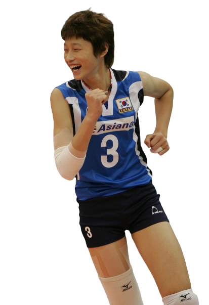

고등학생이 성인 국가대표를 씹어먹고, 프로 데뷔하자마자 전 시즌 꼴찌팀을 우승시키고, 부상이 있어도 매 시즌 모든 대회에서 상을 휩쓸고 다니고, 가는 팀마다 우승하고, 올림픽 MVP와 득점 세계신기록을 보유한 만화보다 더 만화 같은 선수의 이야기가 있다.
당연히 아프기는 하죠, 찢어졌으니까
김연경, 2020 도쿄 올림픽 아시아 예선전 당시
그녀의 선수 생활 중 이루지 못한 목표가 하나 있다. 바로 올림픽 메달이다. 이 목표 달성을 위해서 2019년은 그녀에게 매우 중요한 해였다. 자신의 마지막 올림픽이 될 2020 도쿄 올림픽 출전권이 걸린 예선 대회가 있었기 때문이다. 그런데 비시즌 국가대표 경기부터 리그 경기까지 쉬지 않고 달려온 것이 독이 되었을까. 대회 도중 복근이 4cm나 찢어지는 부상을 당했다. 이 대회 1위만이 올림픽에 간다. 과연 그녀는 자신의 꿈을 이루기 위한 첫 관문을 무사히 통과했을까.
그녀가 세계 최고의 올라운드 플레이어라는 사실에는 이견이 없을 것이다.
미국 NBC 중계진

초등학교 시절 언니를 따라 체육관에 놀러 갔다가 배구를 시작하게 된다. 키가 작다 보니 지도자들이 공격수보다는 수비를 위주로 기본기 다지는 연습을 주로 시켰다.
그러다 고등학교 시절부터 급격하게 키가 자라기 시작하면서 공격수로 전향을 하게 되고, 수비도 잘하고 공격도 잘하는 올라운드 플레이어가
탄생하게 된다.
한국의 김연경이 자신의 첫 번째 올림픽에서 207점을 기록했다. 이전 세계 기록인 204점을 넘어서는 최고 기록이다.
AP 통신, 2012 런던 올림픽 당시
대망의 2012 런던 올림픽. 당시 여자배구 대표팀은 조별 예선 1승조차 장담하기 힘들었던 약체로 평가되었다. 하지만 강호들이 즐비한 죽음의 조에서 우승 후보인 브라질까지 이기며 당당히 조별 예선을 통과한다. 조별 예선에서는 이 때까지 한 번도 이겨보지 못한 강팀이었던 세르비아를 김연경의 압도적인 경기력을 앞세워 이긴다.
김연경은 세계 최고의 선수 중 한 명이다.
이탈리아 국가대표팀 前 감독 마시모 바르볼리니
지금도 명경기 추천해달라는 글이 올라오면 빠지지 않고 나오는 8강 경기다. 8강에서 만나게 된 상대는 이탈리아. 당시 메달권을 바라보고 있던 강한 팀이었기 때문에 우리나라의 승리를 예상하는 곳은 거의 없었다. 하지만 김연경의 활약에 힘입어 이탈리아를 이기고 4강에 진출하며 1976년 몬트리올 올림픽 이후 36년만에 올림픽 메달을 기대하게 만든다.
하지만...
4강에서 만난 미국에 패배하고, 3.4위전에서 만난 일본에 아쉽게 패배하면서 눈물을 삼키며 그녀의 꿈은 이루지 못하고 4위로 대회를 마감한다. 김연경은 런던 올림픽 본선에서 8경기 동안 207득점 (한 경기 평균 25.9점)이라는 올림픽 신기록을 세우는 어마어마한 퍼포먼스로 대한민국 대표팀의 최종 순위가 4위였음에도 불구하고 올림픽 MVP로 선정되었다. 이후 그녀는 자타공인 세계적인 선수로 올라선다.